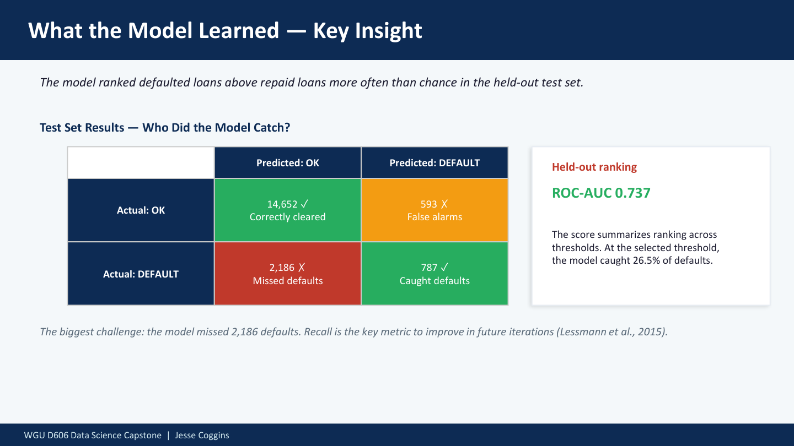

Business question
How well can financial characteristics distinguish loan default risk before an underwriting decision?
Approach
How the work was done
- Of 148,670 source records, 121,447 had complete values. The split assigned 85,012 to training, 18,217 to validation and 18,218 to testing.
- Selected 13 predictors plus the Status target, one-hot encoded eight categorical variables, and used a stratified 70/15/15 train-validation-test split.
- Trained a balanced Random Forest, then tuned 48 parameter candidates with 5-fold GridSearchCV on ROC-AUC and evaluated the selected model on the untouched test set.
Results
What the analysis shows
- Test performance: 84.7% accuracy, 57.0% precision, 26.5% recall, 0.362 F1, and 0.737 ROC-AUC.
- At the tested threshold, 1,380 loans were flagged. Of those, 787 defaulted and 593 were repaid. Another 2,186 defaults went unflagged.
- The project frames the score as underwriting decision support rather than an automatic approval rule.
From the project
What the risk score means for an underwriter

Caught defaults and review workload
Slide 9 of the published stakeholder presentation translates test performance into cases. Reviewing all 1,380 flagged loans would identify 787 defaults at this threshold.
Business relevance
What this makes easier to decide
The model can support a consistent first-pass risk review, but the measured recall and the stakes of lending make human review and policy controls essential.